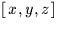
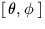
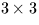
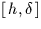
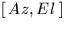
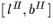

Next: Using vectors
Up: EXPLANATION AND EXAMPLES
Previous: Formatting angles
As an alternative to employing a spherical polar coordinate system,
the direction of an object can be defined in terms of the sum of any
three vectors as long as they are different and
not coplanar. In practice, three vectors at right angles are
usually chosen, forming a system
of Cartesian coordinates. The x- and y-axes
lie in the fundamental plane (e.g. the equator in the
case of ![$[\,\alpha,\delta\,]$](img3.gif) ), with the x-axis pointing to zero longitude.
The z-axis is normal to the fundamental plane and points
towards positive latitudes. The y-axis can lie in either
of the two possible directions, depending on whether the
coordinate system is right-handed or left-handed.
The three axes are sometimes called
a triad. For most applications involving arbitrarily
distant objects such as stars, the vector which defines
the direction concerned is constrained to have unit length.
The x-, y- and z-components
can be regarded as the scalar (dot) product of this vector
onto the three axes of the triad in turn. Because the vector
is a unit vector,
each of the three dot-products is simply the cosine of the angle
between the unit vector and the axis concerned, and the
x-, y- and z-components are sometimes
called direction cosines.
), with the x-axis pointing to zero longitude.
The z-axis is normal to the fundamental plane and points
towards positive latitudes. The y-axis can lie in either
of the two possible directions, depending on whether the
coordinate system is right-handed or left-handed.
The three axes are sometimes called
a triad. For most applications involving arbitrarily
distant objects such as stars, the vector which defines
the direction concerned is constrained to have unit length.
The x-, y- and z-components
can be regarded as the scalar (dot) product of this vector
onto the three axes of the triad in turn. Because the vector
is a unit vector,
each of the three dot-products is simply the cosine of the angle
between the unit vector and the axis concerned, and the
x-, y- and z-components are sometimes
called direction cosines.
For some applications involving objects
with the Solar System, unit vectors are inappropriate, and
it is necessary to use vectors scaled in length-units such as
AU, km etc.
In these cases the origin of the coordinate system may not be
the observer, but instead might be the Sun, the Solar-System
barycentre, the centre of the Earth etc. But whatever the application,
the final direction in which the observer sees the object can be
expressed as direction cosines.
But where has this got us? Instead of two numbers - a longitude and
a latitude - we now have three numbers to look after
- the x-, y- and
z-components - whose quadratic sum we have somehow to contrive to
be unity. And, in addition to this apparent redundancy,
most people find it harder to visualize
problems in terms of  than in .Despite these objections, the vector approach turns out to have
significant advantages over the spherical trigonometry approach:
- Vector formulae tend to be much more succinct; one vector
operation is the equivalent of strings of sines and cosines.
- The formulae are as a rule rigorous, even at the poles.
- Accuracy is maintained all over the celestial sphere.
When one Cartesian component is nearly unity and
therefore insensitive to direction, the others become small
and therefore more precise.
- Formulations usually deliver the quadrant of the result
without the need for any inspection (except within the
library function ATAN2).
A number of important transformations in positional
astronomy turn out to be nothing more than changes of coordinate
system, something which is especially convenient if
the vector approach is used. A direction with respect
to one triad can be expressed relative to another triad simply
by multiplying the column vector by the appropriate
 orthogonal matrix
(a tensor of Rank 2, or dyadic). The three rows of this
rotation matrix
are the vectors in the old coordinate system of the three
new axes, and the transformation amounts to obtaining the
dot-product of the direction-vector with each of the three
new axes. Precession, nutation,  to , to  and so on are typical examples of the
technique. A useful property of the rotation matrices
is that they can be inverted simply by taking the transpose.
The elements of these vectors and matrices are assorted combinations of
the sines and cosines of the various angles involved (hour angle,
declination and so on, depending on which transformation is
being applied). If you write out the matrix multiplications
in full you get expressions which are essentially the same as the
equivalent spherical trigonometry formulae. Indeed, many of the
standard formulae of spherical trigonometry are most easily
derived by expressing the problem initially in
terms of vectors.
Next: Using vectors
Up: EXPLANATION AND EXAMPLES
Previous: Formatting angles
SLALIB --- Positional Astronomy Library
Starlink User Note 67
P. T. Wallace
12 October 1999
E-mail:ptw@star.rl.ac.uk